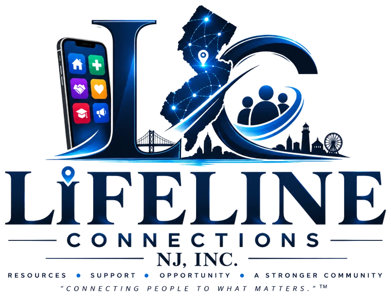

Public safety and community resilience infrastructure for New Jersey
Enter your zip code to find crisis, housing, and mental health resources near you, plus any active weather alerts for your area. Works even with a weak connection.
Search a zip code above to see resources in that area.
Static guidance, cached on your device and available even offline.
Water, medications, copies of ID, phone charger, cash, and a change of clothes for 72 hours.
Save the nearest Type 1 emergency shelter from your results above before conditions worsen.
Register for NJ's ReadyNJ or your county's reverse-911 system for direct notifications.
Identify a cooling or warming center in your area and keep devices charged ahead of storms.
“Knowledge is the lifeline, and Lifeline Connections is the cure.”
Lifeline Connections NJ is a unified digital infrastructure for public safety and community resilience, bridging New Jersey's knowledge crisis by connecting residents to standardized, verified crisis, housing, and mental health resources, with or without a signal.
Support the mission
Lifeline Connections NJ, Inc. is a nonprofit. Donations fund the verification of shelters and services, the weather-alert infrastructure, and offline access for residents without reliable data plans: the people most likely to need this app when it matters most.
100% of individual donations go directly toward keeping resource data current and the platform free for every NJ resident.
Lifeline Connections NJ, Inc. is a registered 501(c)(3) nonprofit. Donations may be tax-deductible.
Secure checkout · Recurring giving available · No account required